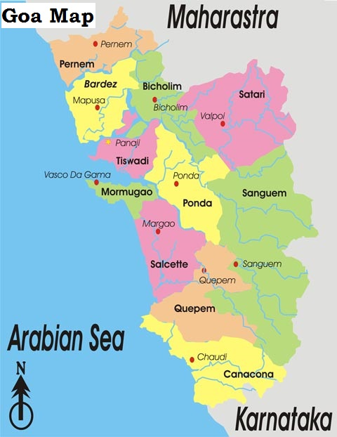

GEOGRAPHY:
Goa encompasses an area of 3,702 km2 (1,429 sq mi). It lies between the latitudes 14°53′54″ N and 15°40′00″ N and longitudes 73°40′33″ E and 74°20′13″ E.
Goa is a part of the coastal country known as the Konkan, which is an escarpment rising up to the Western Ghats range of mountains, which separate it from the
Deccan Plateau. The highest point is the Sonsogor, with an altitude of 1,167 metres (3,829 ft). Goa has a coastline of 160 km (99 mi).Goa's seven major rivers
are the Zuari, Mandovi, Terekhol, Chapora, Galgibag, Kumbarjua canal, Talpona and the Sal. The Zuari and the Mandovi are the most important rivers, interspaced
by the Kumbarjua canal, forming a major estuarine complex.These rivers are fed by the Southwest monsoon rain and their basin covers 69% of the state's geographical
area. These rivers are some of the busiest in India. Goa has more than 40 estuarine, eight marine, and about 90 riverine islands. The total navigable length of Goa's
rivers is 253 km (157 mi). Goa has more than 300 ancient water-tanks built during the rule of the Kadamba dynasty and over 100 medicinal springs.
The Mormugao harbour on the mouth of the River Zuari is one of the best natural harbours in South Asia.Most of Goa's soil cover is made up of laterites rich in
ferric-aluminum oxides and reddish in colour. Further inland and along the riverbanks, the soil is mostly alluvial and loamy. The soil is rich in minerals and humus,
thus conducive to agriculture. Some of the oldest rocks in the Indian subcontinent are found in Goa between Molem and Anmod on Goa's border with Karnataka. The rocks
are classified as Trondjemeitic Gneiss estimated to be 3,600 million years old, dated by rubidium isotope dating. A specimen of the rock is exhibited at Goa University.

CLIMATE:
Goa features a tropical monsoon climate under the Köppen climate classification. Goa, being in the tropical zone and near the Arabian Sea, has a hot and humid climate for most of the year. The month of May is usually the hottest, seeing daytime temperatures of over 35 °C (95 °F) coupled with high humidity. The state's three seasons are Southwest monsoon period (June – September), post-monsoon period (October – January), and pre-monsoon period (February – May). Over 90% of the average annual rainfall (120 inches) is received during the monsoon season.